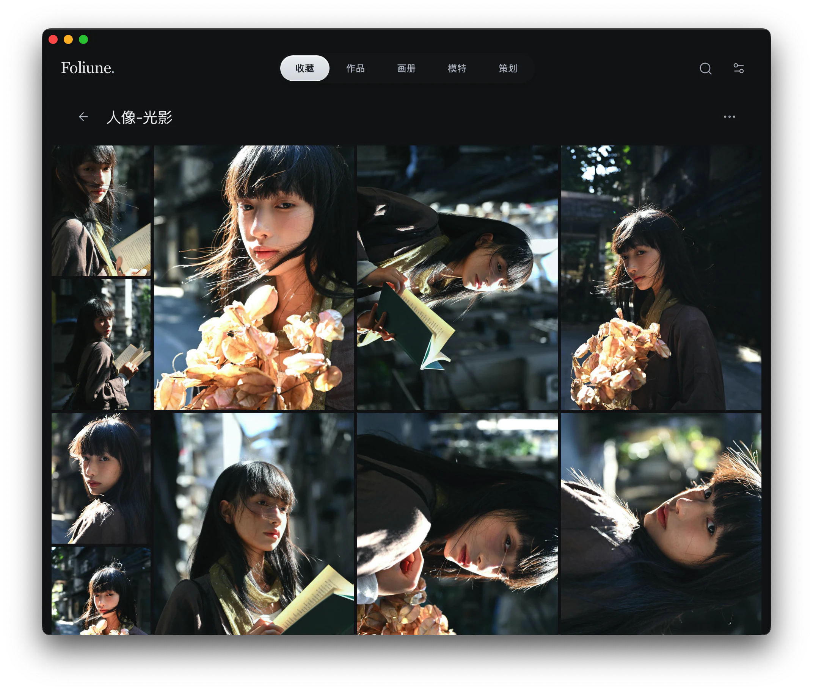
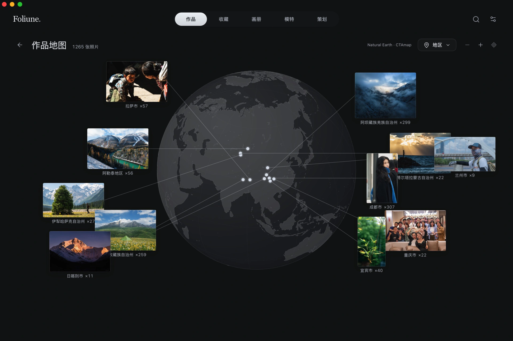

把照片编成画册
从相簿挑出想放在一起的照片，先自动排版，再慢慢调整章节和跨页。画册可以导出为独立 HTML 文件，分享给别人翻看。

按地点回看作品
在离线地球上点选代表照，回看当地拍下的作品。照片缺少 GPS 时，可手动补录拍摄地区。

为下一次拍摄做准备
把参考图、场景、妆造和镜头清单放进同一份策划。出发前导出一张长图，到现场用手机查看。

更多功能
-
图库整理
导入本地照片或绑定作品目录，为照片添加标签和笔记，用全局搜索找回作品、画册与策划。
-
从帖子导入照片
粘贴单篇小红书笔记或 Instagram 帖子的链接，预览选片，确认后加入图库。能否获取取决于帖子访问条件，只导入静态图片。
-
全屏欣赏
按顺序或随机播放照片，也可选用本地音乐。
-
模特档案
把模特资料和样片放在一起，方便回看以往的拍摄。
-
拼图与发布预览
将选片排成拼图并导出 PNG，或预览社交帖子的图文排版。
-
图库备份
用 ZIP 备份和恢复图库。可只保存图库资料和缩略图，也可带上全部原片，包括引用的本地文件和作品目录文件。
-
命令行工具
在 macOS 版 Foliune 的「设置 → 命令行工具」安装
命令行使用说明foliune-cli。通过终端或支持调用终端的 AI 助手查询和编辑同一个本地图库，例如按标签找照片并加入相簿。
下载 Foliune
macOS Apple Silicon
首次打开 Foliune
开发者还没攒够 Apple 开发者会员费。
若首次打开被拦截，请按这个路径操作。
系统设置 → 隐私与安全性 → 仍要打开
已安装可在「设置 → 应用更新」检查新版。